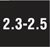

14.4. Executing Other (Python) ProgramsWhen we discuss the execution of other programs, we distinguish between Python programs and all other non-Python programs, which include binary executables or other scripting language source code. We will cover how to run other Python programs first, then how to use the os module to invoke external programs. 14.4.1. ImportDuring runtime, there are a number of ways to execute another Python script. As we discussed earlier, importing a module the first time will cause the code at the top level of that module to execute. This is the behavior of Python importing, whether desired or not. We remind you that the only code that belongs to the top level of a module are global variables, and class and function declarations. Core Note: All modules executed when imported
These should be followed by an if statement that checks __name__ to determine if a script is invoked, i.e., "if__name__ == '__main__'". In these cases, your script can then execute the main body of code, or, if this script was meant to be imported, it can run a test suite for the code in this module. One complication arises when the imported module itself contains import statements. If the modules in these import statements have not been loaded yet, they will be loaded and their top-level code executed, resulting in recursive import behavior. We present a simple example below. We have two modules import1 and import2, both with print statements at their outermost level. import1 imports import2 so that when we import import1 from within Python, it imports and "executes" import2 as well. Here are the contents of import1.py: # import1.py
print 'loaded import1'
import import2And here are the contents of import2.py: # import2.py
print 'loaded import2'Here is the output when we import import1 from Python: >>> import import1
loaded import1
loaded import2
>>>Following our suggested workaround of checking the value of __name__, we can change the code in import1.py and import2.py so that this behavior does not occur. Here is the modified version of import1.py: # import1.py
import import2
if __name__ == '__main__':
print 'loaded import1'The following is the code for import2.py, changed in the same manner: # import2.py
if __name__ == '__main__'
print 'loaded import2'We no longer get any output when we import import1 from Python: >>>import import1
>>>Now it does not necessarily mean that this is the behavior you should code for all situations. There may be cases where you want to display output to confirm a module import. It all depends on your situation. Our goal is to provide pragmatic programming examples to prevent unintended side effects. 14.4.2. execfile()It should seem apparent that importing a module is not the preferred method of executing a Python script from within another Python script; that is not what the importing process is. One side effect of importing a module is the execution of the top-level code. Earlier in this chapter, we described how the exec statement can be used with a file object argument to read the contents of a Python script and execute it. This can be accomplished with the following code segment: f = open(filename, 'r') exec f f.close() The three lines can be replaced by a single call to execfile(): execfile(filename)Although the code above does execute a module, it does so only in its current execution environment (i.e., its global and local namespace). There may be a desire to execute a module with a different set of global and local namespaces instead of the default ones. The full syntax of execfile() is very similar to that of eval(): execfile(filename, globals=globals(), locals=locals()) Like eval(), both globals and locals are optional and default to the executing environments' namespaces if not given. If only globals is given, then locals defaults to globals. If provided, locals can be any mapping object [an object defining/overriding __getitem__()], although before 2.4, it was required to be a dictionary. Warning: be very careful with your local namespace (in terms of modifying it). It is much safer to pass in a dummy "locals" dictionary and check for any side effects. Altering the local namespace is not guaranteed by execfile()! See the Python Library Reference Manual's entry for execfile() for more details. 14.4.3. Executing Modules as ScriptsA new command-line option (or switch) was added in Python 2.4 that allows you to directly execute a module as a script from your shell or DOS prompt. When you are writing your own modules as scripts, it is easy to execute them. From your working directory, you would just call your script on the command line:
$ myScript.py # or $ python myScript.py This is not as easy if you are dealing with modules that are part of the standard library, installed in site-packages, or just modules in packages, especially if they also share the same name as an existing Python module. For example, let us say you wanted to run the free Web server that comes with Python so that you can create and test Web pages and CGI scripts you wrote. You would have to type something like the following at the command line: $ python /usr/local/lib/python2x/CGIHTTPServer.py
Serving HTTP on 0.0.0.0 port 8000 ...That is a long line to type, and if it is a third-party, you would have to dig into site-packages to find exactly where it is located, etc. Can we run a module from the command line without the full pathname and let Python's import mechanism do the legwork for us? That answer is yes. We can use the Python -c command-line switch: $ python -c "import CGIHTTPServer; CGIHTTPServer.test()"This option allows you to specify a Python statement you wish to run. So it does work, but the problem is that the __name__ module is not '__main__'... it is whatever module name you are using. (You can refer back to Section 3.4.1 for a review of __name__ if you need to.) The bottom line is that the interpreter has loaded your module by import and not as a script. Because of this, all of the code under if__name__=='__main__' will not execute, so you have to do it manually like we did above calling the test() function of the module. So what we really want is the best of both worldsbeing able to execute a module in your library but as a script and not as an imported module. That is the main motivation behind the -m option. Now you can run a script like this: $ python -m CGIHTTPServer  That is quite an improvement. Still, the feature was not as fully complete as some would have liked. So in Python 2.5, the -m switch was given even more capability. Starting with 2.5, you can use the same option to run modules inside packages or modules that need special loading, such as those inside ZIP files, a feature added in 2.3 (see Section 12.5.7 on page 396). Python 2.4 only lets you execute standard library modules. So running special modules like PyChecker (Python's "lint"), the debugger (pdb), or any of the profilers (note that these are modules that load and run other modules) was not solved with the initial -m solution but is fixed in 2.5. |